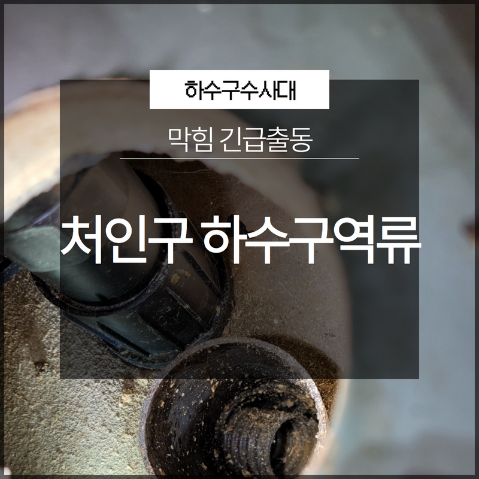
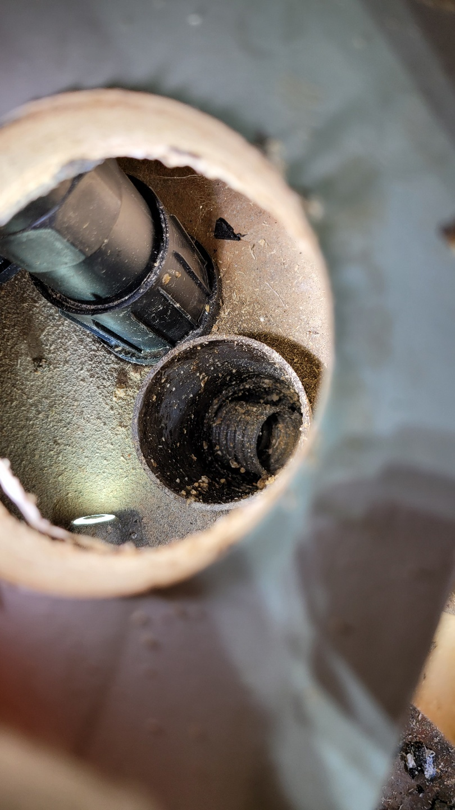
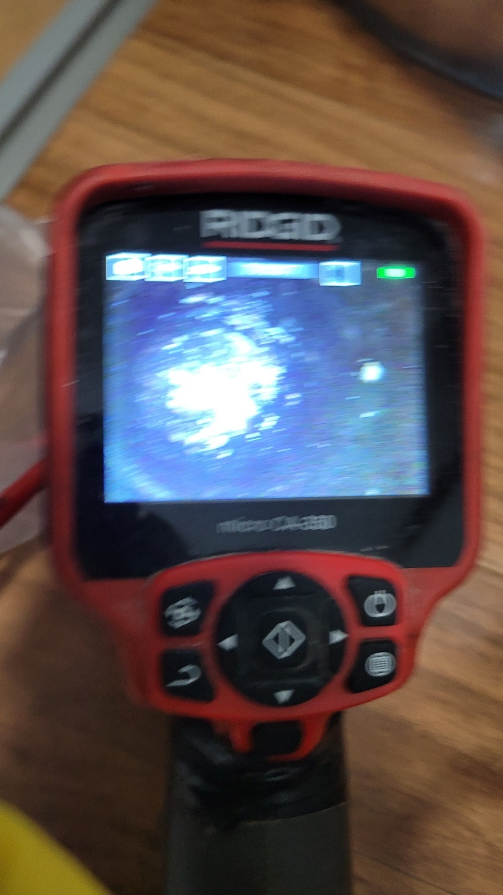
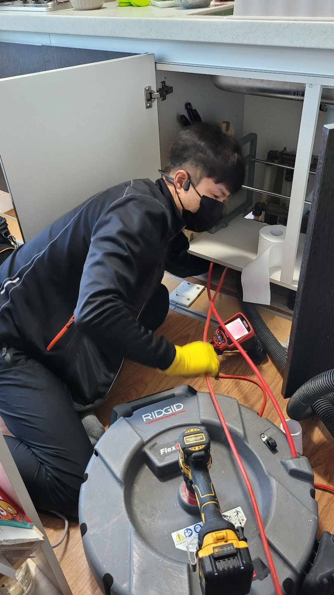

🏠 처인구 하수구역류 막힘 긴급출동 모든 현장에 항상 최선을 다하고 있습니다!
용인 처인구 하수구막힘 전문 시공 후기

📋 작업 개요
- 위치: 용인 처인구, 처인구, 용인
- 서비스 유형: 하수구막힘, 배관막힘, 역류해결, 뚫는업체, 배관청소
- 작업 일시: 2023. 2. 2. 22:29
- 업체명: 하수구수사대 (010-5615-2118)
🔍 문제 상황
안녕하세요 하수구수사대입니다.
일상을 살아가면서 평소에 잘 사용하던 것들이 고장이 나거나 막히게 되면 상당한 불편함을 겪을 수 밖에 없습니다. 특히나 배관같은 경우에 우리가 매일 사용하는 물을 제대로 흘려보내지 못하게 되면 생활의 불편함은 이루말할 수 없는 것이라 할 수 있습니다.
저희는 배관관리 전문업체로 고객님의 입장에서 생각하고 항상 최선을 다하는 하수구 전문관리사로 노력을 하고 있습니다. 오늘은 이렇게 하수구막힘으로 인해서 여러 가지 문제를 경험하고 계신 분들을 위해서 도움이 되고자 정보를 드리려고 하는데요 처인구 하수구역류 막힘 긴급출동을 통해서 해결한 후기를 통해서 자세하게 알려드리도록 하겠습니다.

🔎 원인 분석
💡 전문가 진단: 하수구의 특성상 눈에 보이지 않고 지저분하고 냄새가 나는 곳이다보니
처인구 하수구역류 막힘 긴급출동현장은 하수구막힘으로 인한 역류까지 발생을 하면서 급하게 의뢰를 해주신곳이었는데요 우리가 살아가면서 어떤 문제를 접하지 않으면서 살아가면 좋을 수 있지만 본인도 모르는 사이에 어떤 부분에서 문제가 발생하게 되는 경우도 있을 수 있습니다.
이러한 문제가 발생을 하게 되면 항상 어디서 어떻게 정확하게 그런 일이 발생하게 되었는지를 확인을 한 후에 해결을 하는 것이 필요하다고 할 수 있습니다. 하수구 문제에 있어서도 마찬가지인데요 하수구에서 문제가 생기게 되면 원인을 파악하고 그 문제를 해결해나가는 방식으로 처리를 해야 안전하게 해결을 할 수 있습니다.
하수구의 특성상 눈에 보이지 않고 지저분하고 냄새가 나는 곳이다보니
우리가 어떻게 접근을 해야 할지조차 모르는 상황이 많이 발생을 합니다. 때로는 그냥 놔두게 되면 어떻게든 되겠지 하고 피하게 되는 경우도 있을 수 있는데요 지금같이 추운 날씨가 지속되는 경우에는 더욱이 하수구가 얼게 될 수 있기 때문에 역류가 되는 경우나 동파의 위험까지 발생할 수 있습니다.

🔧 작업 과정
보통 하수구가 넘쳐서 방문을 하게 되면
하수구는 배관 구멍이 좁아진 상태이기 때문에 배관이 얼기가 쉬울 수 있습니다. 그래서 겨울에는 언하수구를 녹여달라는 작업 의뢰가 많이 발생을 하기도 합니다. 이러한 막힘의 문제가 발생하게 되면서 하수구 청소를 방치하게 되거나 시간이 길어지게 되면 그 결과 문제를 더욱 키우게 되는 일이 발생할 수 밖에 없습니다.
그러므로 하루빨리 문제의 원인을 찾아서 그에 맞는 해결방식으로 하수구 배관 청소를 하는 것이 필요합니다. 이번에 방문한 처인구 하수구역류 막힘 긴급출동 현장은 공용 건물의 사무실에 있는 화장실에서 발생을 한 것인데요 모든 칸이 다 막히게 되면서 상당한 불편함을 겪고있는 상황이었습니다. 예전부터 화장실의 물이 좀 약하게 내려가는 경향이 있긴 했지만 이렇게 막힌적은 처음이셨다고 합니다.
일반적으로 이러한 경우에 하수구 문제가 발생을 하는 경우
더 악화되기 전에 해결을 하는 것이 좋은데요 하지만 하수구에 문제가 생겼다고는 생각을 못 하는 경우가 많기 때문에 어디로 연락을 해야 할지를 고민하는 경우가 많이 발생하게 되는 것입니다. 사무실은 하루의 대부분의 시간을 보내는 곳이다보니 빠른 해결을 하는 것이 필요했는데요 가장먼저 하수구막힘이 왜 발생을 하게 되었는지를 판단하고 원인을 찾아 해결을 하는 것이 필요했습니다.
배관내시경을 이용해서 내부를 확인을 해보니 이물질들이 굳어서 덩어리를 이루고 있는 상황이었습니다. 막힘의 원인을 찾았다면 그에 맞는 해결장비로 이물질을 제거해야 하는데요 이물질 덩어리가 딱딱하고 큰 만큼 잘게 부수어서 제거를 하기로 하였습니다.


✅ 작업 완료
배관의 크기에 맞는 장비를 통해서 이물질덩어리를 제거를 하고
막힘을 완벽하게 뚫어서 해결을 하였습니다.




⚠️ 하수구 배관 막힘 예방 및 관리 가이드
- ✅ 머리카락, 비닐, 물티슈 등 물에 분해되지 않는 이물질은 하수구 유입을 절대 금지해 주세요.
- ✅ 하수구 거름망을 씌우고 모여진 이물질은 주기적으로 쓰레기통에 바로 비워주셔야 합니다.
- ✅ 배관 노후가 심할 경우 이물질이 더 쉽게 걸리므로 주기적인 배관 세척(고압세척 등)을 권장합니다.
- ✅ 작업 후 1년 이내 재발 시 하수구수사대에서 무상 A/S 보증 서비스를 제공합니다.
💡 핵심 정리
- 확실한 장비 작업(내시경 점검 및 샤프트 스케일링)으로 원인을 뿌리 뽑습니다.
- 작업 후 1년 이내에 동일한 부위 재발 시 100% 무상 A/S 서비스를 보장합니다.
- 서울 · 경기 · 인천 전 지역에 24시간 언제든 긴급 출동할 수 있도록 항시 대기 중입니다.
❓ 자주 묻는 질문 (FAQ)
🚨 용인 처인구 하수구막힘 문제로 고민이신가요?
정확한 원인 진단과 확실한 시공으로 재발 없는 해결을 약속드립니다.
24시간 긴급 출동 | 서울 · 경기 · 인천 전지역 | 1년 내 재발 시 무상 A/S